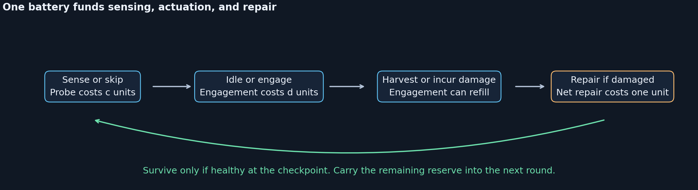
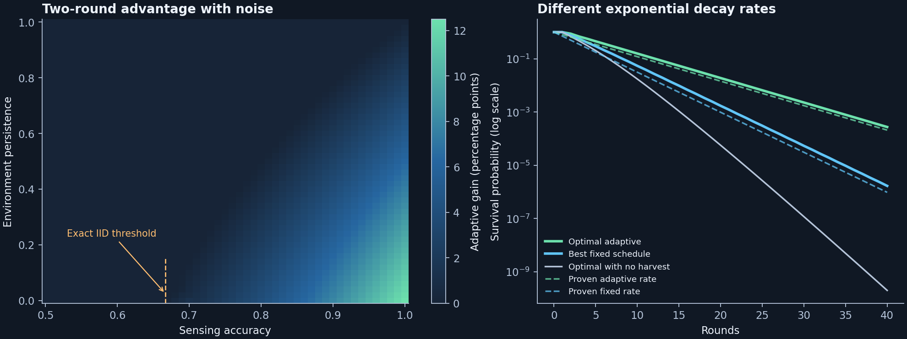
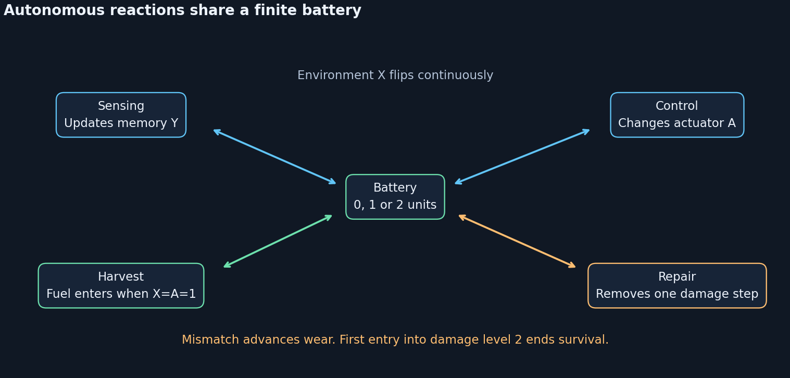

Reserve-dependent sensing and survival in two finite-state physical architectures
AI-assisted research workspace draft · 17 November 2026
Contents and navigation
- Abstract
- Motivation and relation to previous work
- Main results and the logic connecting them
- Checkpoint architecture and proofs
- Autonomous architecture and certificates
- Appendix — Paid repair contact and its sharp energy bound
- Evidence and reproduction receipts
- Literature comparison and novelty assessment
- Publication readiness and limitations
- References
Abstract
We study survival of devices whose sensing, control, and repair compete for finite stored energy. In a checkpoint model with endogenous harvesting, we construct a strict two-round sensing-feedback advantage and derive its accuracy threshold. For a symmetric two-unit device, we prove an exact asymptotic separation from every fixed sensing word and identify a switch in its optimal fixed regime. In an autonomous reversible reaction network, we certify a finite-time advantage over all constant sensing intensities within a specified control class, while the best binary asymptotic circuit leaves sensing off. The comparisons establish architecture-dependent value of information. We provide explicit assumptions, attaining constructions, numerical certificates, and reproducible code. Priority and independent proof review remain open.
Motivation and relation to previous work
Information thermodynamics and information-dependent viability provide the conceptual setting [1–5,11]. Battery-dependent costly sensing and energy-harvesting control are established [6–8]. Controlled reachability and products of nonnegative matrices provide the mathematical tools [9,10]. Our candidate contribution is a pair of explicit, fully specified survival examples with analytically or computationally certified optima. Each statement below quantifies over its declared policy or circuit class. The autonomous system uses a maintained fuel reservoir, and the checkpoint construction uses supplied phase timing and work registers.
The finite-time comparison and the asymptotic comparison are distinct objectives. Changing architectures changes several physical assumptions simultaneously. We therefore claim conditional results within each model, with no causal inference that removing a clock alone determines the outcome.
Main results and the logic connecting them
The results use two meanings of time: the integer round count N in the checkpoint model and continuous duration T in the autonomous model. All energetic statements specify what is inside the accounting boundary. No molecular mechanism is assumed merely because a Markov edge has a thermodynamically admissible rate ratio.
Theorem A (finite-horizon checkpoint control). Under the supplied-phase protocol below, the Bellman recurrence gives the supremum survival probability over all admissible history-dependent, randomized controllers. A deterministic maximizing policy and maximum-rate repair attain it. The proof is conditioning plus induction, with repair reduced to a two-state master equation.
Theorem B (strict feedback value). For two rounds, perfect readout, initial reserve two, unit sensing and engagement costs, capacity and harvest at least two, and IID opportunity probability q\in(0,1), adaptive sensing strictly exceeds every precommitted sensing word whenever 0<\kappa<1. At q=\kappa=1/2 and capacity/harvest two the values are 7/8 and 3/4. With symmetric readout accuracy f, this instance has a strict advantage precisely for f>2/3. These constants belong to this architecture and parameter choice.
Theorem C (all-word asymptotic comparison). In the symmetric, perfect-readout, two-unit checkpoint model, the optimal adaptive and fixed-word survival root rates are
r_{\rm ad}=\frac{1+\sqrt5}{4},\qquad r_{\rm fixed}=\frac12\max\left\{\sqrt2,\frac{1+\sqrt{1+4\kappa}}2\right\}.
The upper bounds apply even to nonperiodic words chosen separately for each horizon. Matching stationary or alternating constructions attain the rates. The proof reduces the fixed problem to products of two nonnegative matrices plus bounded additive terms. Without harvesting, finite reserves give the same root rate 1-q(1-\rho) to both classes. Thus replenishment is essential to this example's exponential advantage.
Theorem D (certified autonomous instance). With the exact rational parameters and launch distribution specified below, one of 324 static binary circuits is uniquely optimal at T=4. It senses at full reserve only. Writing D=288230376151711744, its certified survival satisfies
\frac{153847617132986168}{D}\le S_{\rm winner}\le \frac{153847742532300097}{D}.
Every other binary circuit has survival at most 153763933422971466/D. Allowing a constant sensing activity anywhere in [0,1], with each actuator table reoptimized, gives the uniform comparator bound
\sup_{\alpha,\,\mathrm{table}}S_{\rm uniform}(4) \le\frac{145923831922267153}{D} <\frac{153847617132986168}{D}.
This is a certified gap of at least about 2.75 percentage points. Its proof combines nonnegative uniformization, outward integer rounding, and a rigorous interpolation remainder. The finite binary optimum is sharp within its declared class; the continuum upper bound need not be attained.
Theorem E (the large-time objective selects differently). Among the same binary autonomous circuits, the best reachable spectral decay exponent is attained with sensing off. The exponent is about 0.24252027, smaller than the best exponent with any sensing enabled. Exact positive-vector ratio bounds certify the ordering. This does not optimize all analogue circuits at infinite time.
The scientific lesson is that information's survival value depends jointly on temporal error structure, resource state, fuel access, damage dynamics, and the horizon. A finite-time advantage and an exponential-rate advantage are different statements. The golden ratio here is the eigenvalue of a two-state surviving reserve process, not evidence of a universal biological constant. Detailed definitions and proofs follow.
Checkpoint architecture and proofs
Model boundary note: the derivation below retains the assumptions of this study. Statements about later extensions are historical and should be read alongside the subsequent studies.
A finite battery funds sensing, actuation, and reversible repair. Correct actuation can move work from a finite environmental packet back into the battery. For the specified checkpoint architecture, we derive the exact survival probability attainable from each initial reserve. We then give a two-round family with a strict feedback advantage, an exact noise threshold, and a case where feedback improves the exponential rate of survival over every precommitted sensing schedule.
1. One reserve, with feedback through the environment

A healthy device starts a round with b\in\{0,\ldots,C\} units in its battery. A unit has energy \epsilon k_BT. The hidden binary environment X has stationary probability q of state 1. That state makes a work packet accessible to an engaged actuator. From one round to the next the transition law is
P(X=1\mid X_{\rm prev}=j)=q(1-\rho)+\rho j,\qquad j=0,1 .
The launch prior is q when the previous state is unknown. The parameter \rho\in[0,1] measures persistence. For 0<q<1 and 0<\rho<1, a thermal two-state switch realizes this law by relaxing for time \Delta with total rate -\log(\rho)/\Delta and energy gap k_BT\log((1-q)/q). The IID case uses fresh equilibrium flags. The flag is held fixed from sensing through repair. Endpoints with degenerate probabilities can be read as preparations or limits of these switches.
- Sense or skip. A probe pays c\ge1 units into an isolated work receiver and reveals a bit Y with P(Y=X\mid X)=f\in[1/2,1].
- Idle or engage. Idle is action A=0, which has no work bill. Engagement is A=1 and pays d\ge1 units, regardless of the environment. This bill is due before any harvesting. If X=A=1, transfer up to H units from the external packet into the battery, stopping at capacity. A match with X=A=0 transfers nothing.
- Repair a mismatch. The load permutes the degenerate damage bit by D\mapsto D\mathbin{\mathrm{XOR}}[X\ne A]. During mismatch, the contact opens the reversible pair (D=1,b,R=0)\leftrightarrow(D=0,b-1,R=1) for b\ge1, with R a repair receipt. Forward repair releases \epsilon k_BT as heat. Its reverse absorbs the same heat, restores the battery unit, and clears the receipt. With a sum-of-rates ceiling \Gamma and contact duration \tau, the maximum probability of ending this contact healthy is \kappa=(1-e^{-\Gamma\tau})/(1+e^{-\epsilon}), as in Study 02.
- Check the damage bit. The first damaged checkpoint ends operation. The experiment tolerates a healthy checkpoint at zero reserve. On a surviving path the work receipts reveal the previous X by X=A \mathbin{\mathrm{XOR}} R. This reveals past conditions through the consequences of action, with current conditions hidden until the next probe or checkpoint.
Microscopic accounting and admissible control
A powered gate can be an ideal energy-conserving swap on the device plus its work registers. For example, with an initially empty sensing receiver w_s, an energy-degenerate readout bit y=0, and a noise bit e with P(e=1)=1-f, swap the two states
(b,w_s=0,y=0,X,e)\leftrightarrow (b-c,w_s=c,y=X\mathbin{\mathrm{XOR}}e,X,e).
Each allowed pair preserves total energy and the non-overlapping receiver levels make the transformation reversible. The engagement bill can be transferred by the corresponding swap with the actuation receiver. Its nonzero level is the action receipt. The harvest swap retains the residual packet energy, so the reverse is well defined even when capacity clips the transfer. The two-state noise bit can have a thermal bias with gap k_BT\log(f/(1-f)), and serves only as an unchanged control. After the action, the same XOR uncomputes Y from the preserved X,e and the probe receipt. The ideal perfect probe uses e=0. Repair rates have ratio k_+/k_-=e^\epsilon, consistent with the energy difference of the full repair pair. Work receivers retain their records. No step erases an unknown readout or automatically recharges a spent battery.
On each surviving round the pathwise ledger, in units of \epsilon k_BT, is
b'=b-c\,\mathbf1_{\rm probe}-d\,\mathbf1_{\rm engage} +h_{\rm admitted}-\mathbf1_{\rm repaired}.
Repeated forward and reverse repair jumps cancel except for the final net transition. Lost reserve moves into the work receivers or the bath. Admitted work comes from the explicit packet, and rejected work remains there. The two powered gates have prescribed positive work bills. These are properties of the stipulated task hardware. Externally supplied components are the phase clock, prepared receivers and receipt registers, thermal flags, and packets. The bound below is on the initial operating battery given those resources. It imposes no price on building the apparatus or on maintaining the clock and receipts. The controller has access to reserve and receipts, and has no current X input except the paid readout. The environment still couples physically to the actuator and damage gate. The IID proofs need no previous-state receipt in the control policy.
2. Sharp survival frontier and attaining control
Let V_n(j,b) be the best survival probability with n rounds left, prior index j, and reserve b. Index j=\ast denotes a stationary launch. The base is V_0=1. For any nonnegative continuation v(j,b), define G_v(x,a,r) for the paid or unpaid battery r immediately before actuation. Action a is admissible when r\ge da. Let z=r-da. The four live-outcome rules collapse to
G_v(x,a,r)= \begin{cases} v(x,\min(C,z+aH)) & x=a,\\ \kappa\,v(x,z-1) & x\ne a,\ z\ge1,\\ 0 & x\ne a,\ z=0. \end{cases}
Write p_j(x) for the current prior and L_f(y\mid x) for the symmetric readout likelihood. Maxima range only over affordable actions. The exact Bellman update is
\begin{aligned} B_v(j,b)&=\max_a\sum_x p_j(x)G_v(x,a,b),\\ P_v(j,b)&=\sum_y\max_a\sum_x p_j(x)L_f(y\mid x)G_v(x,a,b-c),\quad b\ge c,\\ V_{n+1}(j,b)&=\max\{B_{V_n}(j,b),P_{V_n}(j,b)\}. \end{aligned}
Omit the probe option when b<c. The max in the blind branch comes before knowing X. In the probe branch, the max occurs separately for each observation. These are joint probabilities of (x,y), so no division by a possibly zero observation probability is needed.
Proof of both directions. Given a mismatch, every permitted contact schedule ends healthy with probability at most \kappa. Its only live outcome has the same battery and inferred x, irrespective of the contact schedule. The maximum-rate contact thus dominates for every nonnegative continuation. Once a round survives, the next prior depends only on its inferred x and the remaining battery. Conditioning on the available information bounds each possible decision by the corresponding maximum. Induction from V_0=1 bounds arbitrary history-dependent or randomized controllers. Conversely, store the maximizing mode and action for each entry of the table and use the maximum-rate repair contact. Every step of the induction attains equality. The adaptive frontier uses O(NC) time and space. Monotonicity in b follows by induction since the live branch maps are nondecreasing in remaining reserve and additional reserve only adds affordable actions. For target \eta, invert V_N over b=0,\ldots,C to obtain an exact minimum initial battery or infeasibility.
A strong fixed-schedule comparator
A fixed sensing schedule is any length-N binary word chosen before the first round. It still gets optimal feedback for actuation, including the current readout on scheduled probe rounds. If the scheduled probe is unaffordable it falls back to blind action, which gives the comparator a more favorable rule than failing on the spot. Allowing it to electively cancel an affordable scheduled probe on depleted paths would make its sensing decision a feedback rule.
Each word composes monotone maps B,P with the fallback. We compute the maximum over all words, including nonperiodic schedules. The implementation prunes a suffix only if another suffix dominates its entire vector of continuation values. Applying any common prefix preserves that dominance. The comparison is exact. In the worst case the number of undominated vectors is exponential. Randomizing over fixed schedules cannot exceed their maximum.
3. Exact separation after two rounds

Set c=d=1, H\ge2, C\ge2, and start with b=2. Take IID flags with q\in(0,1), perfect sensing, and \kappa\in(0,1). The optimal last-round survival with 0, 1, or at least 2 units is 1-q,m,1, where m=\max(1-q+q\kappa,q). At one unit skipping the probe is strictly best because spending it leaves only the possibility of a correct idle. At two or more units a probe is strictly best because blind action has positive mismatch probability and \kappa<1.
Probing first and acting on the readout gives A=(1-q)m+q. The two possible blind alternatives give S_0=1-q+q\kappa m and S_1=q+(1-q)^2\kappa. We have A>S_1 because m>\kappa(1-q). If m=1-q+q\kappa, then A-S_0=q^2(1-\kappa^2)>0. If m=q, then A-S_0=3q-1-(1+\kappa)q^2. The latter is concave on [1/(2-\kappa),1], where at the left endpoint it agrees with the positive first expression and at the right endpoint it equals 1-\kappa>0. Thus probing first is strictly required. The unique optimal action after the probe matches the flag. Each flag has positive probability, and the resulting reserves require opposite probe decisions on the next round. A fixed schedule cannot attain A, even if it optimizes every actuation decision. The strict separation holds over the whole open (q,\kappa) parameter family.
For the symmetric instance q=\kappa=1/2, C=H=2, choose \epsilon=\ln3 and \Gamma\tau=\ln3 to realize the repair probability. The four fixed schedules 00,01,10,11, with 1 denoting probe, attain 9/16,5/8,3/4,3/4. The adaptive optimum is 7/8. With capacity two, the adaptive controller reaches 80% using 2\ln3\,k_BT of initial battery and every fixed schedule falls short even at full charge.
4. Noise and persistence

The zero-information limit f=1/2 makes the probe dominated by skipping. The readout supplies only an independent coin and spending its work cannot increase the optimal nondecreasing continuation. Increasing f cannot lower the optimal survival of either policy class. A better symmetric channel can be degraded to a worse one using an independent random flip after paying the same sensor bill, and the optimized controller dominates that simulated strategy. The same reasoning applies to the fixed comparator word by word.
For the symmetric two-round instance with IID flags, the adaptive advantage is strictly positive exactly when f>2/3. In the last round, one unit always favors skipping. At two units, after probing, the posterior \theta=P(X=1\mid Y) gives live probabilities 1-\theta/2 for idle and \theta for engagement. The two equally likely posteriors are f and 1-f. The optimized last-round survival at two units is therefore 3/4 for f\le2/3 and (1+3f)/4 above it. Below or at the threshold, a fixed second-round skip can realize the adaptive result for any first-round choice.
Above the threshold, an optimal first-round skip uses idle strictly and reaches both one and two units on live paths. If the first round probes, idle after Y=0 and engagement after Y=1 are the unique maximizing actions. The branch with X=Y=0 reaches one unit, and X=Y=1 reaches two. In either case the final probe decisions conflict. For f>2/3, subtracting the first-round blind value from its probe value gives 3f^2/8-3/16. Consequently the first-round probe is strictly favored only above 1/\sqrt2, with a tie there. For f\le2/3, the first-round probe value is no greater than its value at 2/3, which is below the blind value.
Persistence changes the posterior before any costly probe. The same Bellman proof applies because live work receipts distinguish the preceding flag. At f=0.9,\rho=0.5 the symmetric example still gains 2.8125 percentage points in two rounds. The heatmap is a numerical illustration of the exact finite-state recurrence. The IID threshold above is proved analytically.
5. Exact long-horizon rate separation
Keep the symmetric IID instance with perfect sensing, C=H=2, and start at full charge, but allow any repair success probability 0<\kappa<1. Let a_N be optimal adaptive survival and s_N the largest survival of any length-N precommitted schedule. Then
\lim_{N\to\infty} a_N^{1/N}=\frac{1+\sqrt5}{4},\qquad \lim_{N\to\infty} s_N^{1/N} =\frac12\max\!\left(\sqrt2,\frac{1+\sqrt{1+4\kappa}}2\right).
These are survival factors per round on an exponential scale. Adaptive sensing wins strictly for every 0<\kappa<1. Alternating fixed probe and blind rounds attains the fixed rate below \kappa=2-\sqrt2. Always acting blind attains it above that threshold. Both attain it at equality. The survival ratio grows exponentially while both absolute survival probabilities tend to zero.

Adaptive upper bound and construction. Let v=(x,y,z) list continuation values at reserves 0, 1, 2. When 0\le x\le y\le z, the blind and scheduled sensing maps are
B(v)=(x/2,\max(y/2+\kappa x/2,z/2),z/2+\kappa y/2),\quad P(v)=(x/2,x/2,(y+z)/2).
Each preserves the ordered nonnegative cone. With r=(1+\sqrt5)/4, take u_0=\min(1,(2r-1)/\kappa)>0 and w=(u_0,1,2r). Then \max(B(w),P(w))\le r w componentwise because \kappa u_0\le2r-1 and 2r^2=r+1/2. The inequality \mathbf1\le w/u_0, order preservation, and homogeneity give a_N\le(2r/u_0)r^N. For the lower bound use a stationary policy. With two units, probe and match the environment. With one unit, engage blind to try to replenish. On reserve states 1 and 2 its live matrix is \bigl(\begin{smallmatrix}0&1/2\\1/2&1/2\end{smallmatrix}\bigr) with eigenvalue r and positive right eigenvector (1,2r). Since (1,2r)/(2r)\le\mathbf1, starting at two units attains at least r^N. The attaining stationary policy uses no repair on surviving paths. It spends the probe when two units can cover it and the possible action. At one unit it takes the risk of blind engagement to get back to two. That is why the adaptive exponential factor is independent of \kappa, even though repair can improve finite-horizon survival.
Fixed upper bound and construction. Work with doubled maps 2B,2P, so x=1 throughout a backwards evaluation from (1,1,1). For u=(y,z)^T, the blind map is between Lu and Lu+(\kappa,0)^T, and the probe map equals Ju+(1,0)^T, with
L=\begin{pmatrix}0&1\\\kappa&1\end{pmatrix},\qquad J=\begin{pmatrix}0&0\\1&1\end{pmatrix}.
Write e=(0,1)^T and g_k=(1,1)L^k e. Then JL^kJ=g_kJ, g_0=1, g_1=2, and g_{k+2}=g_{k+1}+\kappa g_k since L^2=L+\kappa I. Put \ell=(1+\sqrt{1+4\kappa})/2 and m_*=\max(\sqrt2,\ell). Induction gives g_k\le m_*^{k+1} because m_*^2\ge m_*+\kappa. Any word in L,J can be split at occurrences of J. The interior L-runs contract to factors g_k, and the initial and final L-runs have norm bounded by a constant times m_*^k because L has two distinct eigenvalues of absolute value at most m_*. Hence every word of length n has norm at most K m_*^n for one finite constant K, independent of the word. Summing the bounded additive inputs along any word retains a constant times m_*^N upper bound. Dividing by 2^N gives the fixed rate upper bound. Conversely, the doubled maps dominate their homogeneous parts. Since JL e=2e, an alternating schedule achieves at least 2^{\lfloor N/2\rfloor}/2^N. The all-blind schedule dominates (L/2)^N(1,1)^T, which gives rate at least \ell/2 by the positive eigenvector of L. The matching constructions and the word bound establish the fixed rate, including for nonperiodic and horizon-dependent schedules.
Robust rate gap. Return to repair success \kappa=1/2. At stationary probability 1/2 and persistence \rho<1, the probability of any full flag path relative to the IID path is between (1-\rho)^{N-1} and (1+\rho)^{N-1}. For the adaptive construction, restrict to the event that all N noise bits are correct, with probability f^N. For the fixed upper bound, give the fixed controller perfect accuracy, which can only help. This proves the inequalities
\liminf a_N(f,\rho)^{1/N}\ \ge f(1-\rho)r,\qquad \limsup s_N(f,\rho)^{1/N}\ \le(1+\rho)/\sqrt2 .
In particular f=0.97,\rho=0.03 preserves strict exponential separation. These inequalities certify an open region and allow the full feedback policy to exploit reserve and prior conditions.
Removing harvest removes the exponential advantage
Set H=0, keeping the paid operations, sensing accuracy, and repair. On each live path at most C checkpoints can spend a net battery unit. Every other checkpoint must be an idle match in environment 0. For any set of j exceptional rounds, at least N-1-2j adjacent pairs have both indices outside the set. In a Markov flag path all such pairs must be 0\to0, each with probability p_{00}=1-q(1-\rho) conditional on the forced preceding zero. Other constraints only remove probability. A union bound over exceptional sets gives
S_N\le\sum_{j=0}^{\min(C,N)}{N\choose j} p_{00}^{\max(0,N-1-2j)}.
The policy that always skips and idles survives whenever all flags are zero, with probability (1-q)p_{00}^{N-1} for a stationary launch and N\ge1. Thus for 0<q<1 and \rho<1, both optimal adaptive and best fixed survival have exact per-round root rate p_{00} regardless of the initial reserve. The bound allows finite-horizon advantages. The exponential separation in the symmetric example depends on replenishment.
A limitation for every finite device in this class
For 0<q<1,\rho<1, let p_{\min}>0 be the least probability of either flag among all launch and preceding-flag priors. Put L_0=\lfloor C/c\rfloor+1. Under any policy there is probability at least p_{\min}^{L_0} of reaching a first mismatch within the next L_0 rounds from a healthy state. To see it, until a mismatch occurs, at each probed round ask for X=0. That branch either mismatches immediately or uses at least c battery units with no harvest. At the first blind round ask for the flag opposite its chosen action. Each requested outcome has conditional probability at least p_{\min} and there can be at most \lfloor C/c\rfloor consecutive probed rounds on this branch. At the forced mismatch the survival probability is at most \kappa. Consequently every controller satisfies
S_N \le \bigl[1-(1-\kappa)p_{\min}^{L_0}\bigr]^{\lfloor N/L_0\rfloor}.
The bound explains why continued harvesting and feedback cannot eliminate all risk under this protocol. It is a uniform, generally loose bound. The Bellman frontier is the sharp finite-horizon result.
6. Verification and research status
Run from the project root.
python scripts/run_closed_loop.py
$env:PYTHONPATH = 'src'
python -B -m unittest discover -s tests -v
The tests enumerate short decision trees independently of the vectorized Bellman solver, evaluate the attaining policy, compare the best fixed envelope against every fixed word in those trees, and obtain repair probabilities from a two-state matrix exponential. They check the pathwise energy ledger, the analytical noise threshold, and the exponential construction. The figures and the numerical arrays are generated by the same reproduction script. The results record is closed-loop.json.
Finite-horizon survival recursions are instances of established stochastic reachability. Prior work on energy-harvesting transmitters already optimizes costly sensing with feedback over correlated channels. Prior work on energy-harvesting estimation also derives energy-dependent optimal scheduling. Energy-harvesting reliability has also been studied as an outage problem with exogenous arrivals. Switching-system analysis supplies established tools for growth rates of matrix products. Stochastic reachability · Costly channel sensing · Energy-harvesting estimation · Energy-outage analysis · Blondel and Nesterov on nonnegative matrix products
The candidate contributions are the reversible shared-reserve construction, the two-round strict separation over an open parameter family, the two-thirds threshold, the exact exponential separation from all fixed sensing words, and the threshold at which the best fixed regime changes. This targeted comparison leaves priority unestablished. The proofs apply to an externally timed, checkpointed device with supplied packets and ideal gates. A continuous-time controller paid from the same battery, with physically priced clock and memory operations and failure between checkpoints, is a separate extension.
Autonomous architecture and certificates
Model boundary note: the derivation below retains the assumptions of this study. Statements about later extensions are historical and should be read alongside the subsequent studies.
Reserve-dependent sensing improves finite-time survival in this autonomous model. Its advantage does not extend to the best asymptotic decay rate of the same benchmark. The model is a continuous-time Markov jump process with fixed reaction barriers. Sensing, control, and repair each consume a unit of the same battery when they run forward. Correct control opens an external fuel channel. All enabled reactions have finite, positive reverse rates.
1. Autonomous reaction network

A state is s=(b,x,y,a,d). The battery b runs from 0 to capacity C. The environment x, sensor memory y, and actuator a are binary. Damage d takes values 0, 1, and 2. Define failure as the first entry into d=2. A device at b=0 can still operate if the available reactions allow it.
In units of k_BT, let \epsilon be the energy of a battery unit, \delta the energy released by one step of damage, and \mu the chemical work available from one unit of fuel. Use 0\le\delta<\epsilon<\mu and internal energy E(s)=b\epsilon-d\delta. All other states have degenerate energies. Each enabled edge has a forward rate k_+. The reverse rate is fixed by local detailed balance,
\log(k_+/k_-)=W-\Delta E,\qquad \Delta E=E(s')-E(s),
where W is the chemical work supplied to the device on the forward jump. The right-hand side is the heat released to the bath in units of k_BT. Signs reverse on a backward jump.
| Forward channel | Condition and state change | Bath heat on forward jump |
|---|---|---|
| Environment | x=0\to1, independent of the other bits | 0 |
| Sense | b\ge1,\ y\ne x. Set y=x and spend one unit | \epsilon |
| Control | b\ge1. Move a toward the circuit's selected target and spend one unit | \epsilon |
| Harvest | x=a=1,\ b<C. A fuel conversion increases b by one | \mu-\epsilon |
| Wear or terminal damage | x\ne a. Increase d by one | \delta |
| Repair | d=1,\ b\ge1. Return to d=0 and spend one unit | \epsilon-\delta |
The state can change by any enabled reaction at any time. There is no phase variable, externally prescribed pulse, or checkpoint in the physical dynamics. x is a thermal switch with equal flip rates. The only supplied work during operation is the explicitly priced harvest reaction, powered by a fuel reservoir at fixed chemical potential. Its reverse returns chemical work and removes a battery unit. The static gates represent a choice of barriers at fabrication. They multiply both directions of a channel at once. For example, the reverse of a paid correction restores a battery unit and turns a correct sensor into an incorrect one. A reverse repair can create damage while replenishing the reserve. Reactions remain microscopically reversible even at d=2, but trajectories are stopped there for the first-passage question.
This is an autonomous open system. The fuel reservoir is maintained outside the device, and the initial battery and actuator position are prepared. Fabrication and maintaining the ambient fuel concentration are outside the initial operating-reserve bound.
Which circuits can compete?
The binary circuit class chooses for each funded level b=1,\ldots,C whether to enable sensing at its full reference rate. The actuator circuit chooses one of three settings at each funded pair (b,y): disable forward movement, target 0, or target 1. It never receives x directly. Each setting indexes the higher battery endpoint of the reversible edge, so the corresponding return path is always retained. A circuit's rates depend on its actual current state, with no access to elapsed time.
The fixed-sensing comparator has the same actuator truth tables. Its sensing activity is identical at every funded level. We compare with both binary choices and every constant intensity \alpha\in[0,1], where \alpha multiplies both sensing rates. The latter is a larger comparator class than the binary family. The sharp adaptive optimum below is for binary sensing gates and the stated actuator tables.
2. Sharp survival bound
For each circuit c, retain states with d<2. The row subgenerator Q_c has all live transition rates, and its diagonal retains the outgoing rate into d=2. Let \pi_b initialize the battery at b, draw x uniformly, and set y=a=d=0. Then
S_c(T,b)=\pi_b e^{TQ_c}\mathbf1,\qquad S^*(T,b)=\max_{c\in\mathcal C}S_c(T,b).
The first identity follows from the killed forward equation. The finite class \mathcal C has 2^C3^{2C} circuits. Enumerating that class gives an exact bound and its matching construction: install a circuit that attains the maximum. The construction fixes all its rate barriers before launch. Evaluating a different horizon can select a different circuit. There is no switching between circuits during operation. Random selection of a circuit before launch cannot beat the largest value.
A separate maximization over the outgoing rates from each live state would allow the reverse of an edge to be set independently of its forward rate. That relaxation could violate local detailed balance. The exact enumeration keeps every forward–reverse pair linked.
Certification with integer arithmetic
The benchmark uses rational rates. Choose a common uniformization rate \Lambda at least as large as the largest exit rate, and put P_c=I+Q_c/\Lambda. Each P_c is nonnegative and substochastic. Expanding the matrix exponential gives
S_c(T,b)=e^{-z}\sum_{k=0}^\infty\frac{z^k}{k!}\,\pi_bP_c^k\mathbf1, \qquad z=\Lambda T .
The Poisson series is a mathematical way to evaluate a continuous-time chain. \Lambda is not a physical device clock.
For rational T, write w_k=z^k/k! and Z_L=\sum_{k=0}^Lw_k. If L+2>z, the omitted unnormalized tail is at most R_L=w_{L+1}/(1-z/(L+2)), by a geometric comparison. Hence each retained normalized weight lies between w_k/(Z_L+R_L) and w_k/Z_L, and the normalized tail is at most R_L/Z_L. The code rounds those rational bounds outward to an integer grid. It also propagates lower and upper vectors for P_c^k\mathbf1 with floor and ceiling division. Nonnegative matrix entries preserve componentwise bounds at every power. Every uncomputed survival factor is at most one. Summing the rounded products and adding the tail to the upper bound certifies the survival probabilities. The benchmark compares integer numerators on a common denominator. It isolates the winning circuit even after every competitor receives its upper bound.
3. Finite-time adaptive advantage survives

Use capacity two, (e^\epsilon,e^\delta,e^\mu)=(8,2,128), and forward rates
| Environment | Sense | Control | Harvest | Wear | Terminal damage | Repair |
|---|---|---|---|---|---|---|
| 1/2 | 11 | 21/2 | 17/4 | 5/2 | 5/2 | 21/4 |
The rates are an example selected by exploratory numerical search. The certificate applies to these exact rational parameters. Start full and observe at T=4. Each row below optimizes all 81 actuator truth tables.
| Sense at b=1 | Sense at b=2 | Best survival at T=4, approximately |
|---|---|---|
| Off | Off | 47.2884% |
| Off | On | 53.3766% |
| On | Off | 40.9363% |
| On | On | 49.1504% |
The unique best binary circuit senses at full charge only. At one unit the actuator targets the sensor reading. At full charge it targets 1 when y=1, while disabling forward actuation when y=0. The winner's lower bound exceeds the highest upper bound of the other 323 circuits. This is an energy-reserve feedback rule implemented by static state-dependent reaction pathways. For example, a correct update from b=2 can leave one unit for the commanded move, after which matching engagement opens the fuel channel.
Optimizing all binary circuits at each starting reserve gives about 29.7976%, 36.9134%, and 53.3766% survival for zero, one, and two units, respectively. Thus two units, or 2k_BT\log 8, are necessary and sufficient to reach 52% survival at T=4 within this class. The certificate compares both smaller reserves directly, without assuming that more initial charge always helps a given circuit.
Against every constant sensing intensity
For one actuator table write Q_\alpha=Q_0+\alpha A, where A is the sensing generator with activity one. Duhamel's identity, differentiated twice, expresses S''(\alpha) as two insertions of A between substochastic semigroups, integrated over an ordered time simplex with a factor of two. Their induced infinity norms are at most one, so
|S''(\alpha)|\le T^2\|A\|_\infty^2 .
The linear interpolation error on an interval of width h is at most T^2\|A\|_\infty^2 h^2/8. Therefore, evaluate all 81 actuator tables on the 257 nodes with h=1/256, take the largest certified node upper bound, and add the error allowance. The result bounds the whole continuum by 50.6275%, below the adaptive winner's certified lower bound. Both classes use the same actuator choices and bath accounting. The bounds also certify strict separation for T\in[3.99,4.01]. In any circuit, -k_{\rm failure}\le\partial_T S\le0, since the probability loss rate is the current mass in the failure-enabled live states times their terminal jump rate. Thus the certified gap at T=4 can shrink by at most 0.025 over this interval.
Does the direct information channel matter?
In a separate comparison, remove the direct coupling x\to y. An enabled sensor now flips the memory independent of x at the same forward reference rate, spends the same battery unit, and has the same reverse heat. It can still use reserve-dependent gates, and the controller can still use both reserve and y. Endogenous correlations can remain. Reoptimizing all 324 circuits of this comparison leaves the best survival below the informative winner. Thus paying for an environment-independent memory flip cannot explain the observed advantage.
4. The long-run separation does not transfer in this example

For any circuit, restrict Q_c to live states reachable from the launch distribution. The live graph is connected on that set because every internal edge has its reverse and the two launch states communicate by the environment flip. Perron–Frobenius applied after a positive diagonal shift of this irreducible Metzler matrix gives the real spectral abscissa \lambda_c, and \lim_{T\to\infty}\log S_c(T,b)/T=\lambda_c.
The numerical eigensolver only proposes a positive integer vector v. The certificate checks the following componentwise ratios in exact rational arithmetic,
\min_i (Q_cv)_i/v_i\ \le\ \lambda_c\ \le\ \max_i (Q_cv)_i/v_i .
Indeed, if l v\le Q_cv\le u v, positivity of the killed semigroup sandwiches e^{tQ_c}v between e^{lt}v and e^{ut}v. Comparison of \mathbf1 with constant multiples of v yields the same exponential bounds on survival. The reachability restriction prevents unreachable sensor states from supplying an artificial leading eigenvalue.
Among the 324 binary circuits, the optimized large-time exponent -\lambda_c is about 0.24252027 and is attained with sensing off. The best exponents with sensing enabled only at full charge, only at one unit, or at both funded levels are about 0.26435182, 0.26019620, and 0.25318551, respectively. The exact intervals for all circuits with some sensing lie strictly above the best off exponent. The unrestricted binary optimum and the uniform binary optimum thus share the same long-run decay rate. The continuum of constant sensing activities was bounded for the finite-time comparison. The spectral comparison here is for binary circuits.
5. Reproduce and read the evidence
python scripts/run_autonomous.py
$env:PYTHONPATH = 'src'
python -B -m unittest discover -s tests -v
Results and exact enclosure values include the winning gates, the best uniform-intensity enclosure, and the reachable spectral intervals. Tests check every physical reverse edge and energy ratio, compare the certified intervals with an independent matrix exponential, and check spectral and interpolation enclosures. Continuous autonomous information thermodynamics, uniformization, and spectral comparison are established tools. The specific finite-time separation, its information-channel comparison, and its loss at large time are candidate contributions in this architecture. Literature priority is unestablished. Autonomous energy and information flows · Rigorous Poisson truncation
Appendix — Paid repair contact and its sharp energy bound
Let a repair pair have damaged probability 1-p(t), healthy probability p(t), energy drop \epsilon k_BT, and sum of directional rates \gamma(t)\in[0,\Gamma]. Fixed local detailed balance implies
k_+(t)=\gamma(t)\sigma(\epsilon),\quad k_-(t)=\gamma(t)[1-\sigma(\epsilon)],\quad \sigma(x)=\frac1{1+e^{-x}}.
With a damaged start, p(0)=0 and the master equation is p'=\gamma(t)[\sigma(\epsilon)-p]. Integration gives
p(\tau)=\sigma(\epsilon)\left[1-e^{-\int_0^\tau\gamma(t)\,dt}\right] \le(1-e^{-\Gamma\tau})\sigma(\epsilon)=\kappa.
Equality holds by taking \gamma\equiv\Gamma. The protocol may choose the barrier schedule before contact but cannot latch the first repair using unpriced within-contact feedback. On a live outcome, the net battery expenditure is exactly one unit, irrespective of back-and-forth jumps. This proves the repair bound used by Theorem A.
For exogenous stresses, let M count the number of stressed checkpoints in N rounds, continued mathematically even beyond a device failure. With B identical reserve units, sequential conditioning bounds survival on every flag path by \kappa^M\mathbf1_{M\le B}. Maximum-rate contact attains each factor, so
S^*(B)=\sum_{m=0}^{\min(B,N)}\Pr(M=m)\kappa^m.
This argument allows arbitrarily correlated stresses. With m\ge1 certain stresses and variable positive battery gaps whose sum is at most F, put a=1-e^{-\Gamma\tau}. Since (\log\sigma)''=-\sigma(1-\sigma)<0, Jensen's inequality yields
\Pr(\mathrm{survive}\mid M=m) \le a^m\prod_{i=1}^m\sigma(\epsilon_i) \le [a\sigma(F/m)]^m.
For F>0, exactly m equal gaps and maximum-rate contact attain equality. This is a conditional allocation theorem for a known stress count. It does not optimize an unknown count with arbitrary gaps. The clock, load gate, and initial preparations remain supplied resources outside this reserve bound.
Evidence and reproduction receipts
The dossier build reran the existing test suite. The machine-readable receipt records the full output, UTC execution time, and SHA-256 hashes of source, tests, and mathematical notes. Passing tests supports implementation agreement within the tested cases. The proofs and certificates carry the mathematical claims. Fresh verification receipt
| Study | Executable source | Reproduction | Numerical evidence |
|---|---|---|---|
| 01 | model.py | run_study.py | summary, all 144 cases |
| 02 | reserve.py | run_reserve_study.py | independent full-state test |
| 03 | closed_loop.py | run_closed_loop.py | arrays and example |
| 04 | autonomous.py | run_autonomous.py | integer and rational enclosures |
The earlier run-manifest contains historical hashes and package versions for Study 01. Two hashes were already stale on first inspection. The present receipt identifies the exact sources used for this dossier's fresh test run. The 30 tests are a local reproducibility check. Independent scientific review remains pending.
Literature comparison and novelty assessment
The targeted search on 17 November 2026 used combinations of “survival”, “adaptive sensing”, “finite reserve”, “paid repair”, “golden ratio”, “spectral radius”, and autonomous information thermodynamics. Exact-expression searches for the two-thirds sensing threshold and the characteristic rate constants returned substantial unrelated material. A missing search hit supplies limited evidence. The search is not a proof that the formulas have never appeared in another notation or field.
| Prior source | Established overlap | Specific distinction requiring further priority review |
|---|---|---|
| Hartich, Barato and Seifert (2014), bipartite stochastic thermodynamics | Four-state examples, information flow, and thermodynamic inequalities | Our equal-accuracy task-ranking combination and restricted kinetic frontier |
| Kolchinsky and Wolpert (2018), semantic information and agency | Causal relation between information and viability | The reserve-constrained constructive bounds and specific feedback comparisons |
| Abad, Ercetin and Gündüz (2017), costly channel sensing | Sensing spends energy, battery-dependent policies exploit correlated conditions | Our survival objective, paid repair, exact two-round separation, and explicit exponents |
| Vasconcelos et al. (2019), energy-harvesting estimation | Globally optimal scheduling with finite batteries | The present damage process and survival criterion |
| Guruacharya and Hossain (2018 version), self-sustainability and outage | Eventual outage, stochastic energy input, asymptotic bounds | Finite capacity with actions gating fuel and explicit repair |
| Tkachev et al. (2014), controlled Markov reachability | Optimal event probabilities and dynamic programming | Our explicit closed-form example and model-specific constructions |
| Blondel and Nesterov (2009), nonnegative matrix products | Spectral growth bounds and special matrix families | The two matrices induced by this sensing task and its regime-switch formula |
| Ehrich and Sivak (2023), autonomous energy and information flows | Autonomous information thermodynamics and molecular-machine interpretation | Our shared-reserve first-passage comparison and its digital-circuit certificate |
| Fox and Glynn (1988), Poisson probability computation | Rigorous Poisson truncation and CTMC evaluation | Our small integer-grid implementation is a verification tool within established methodology |
| Chen, Chen and Ma (2026), finite-time autonomous information machine | Finite-time autonomous information/energy tradeoffs | The abstract studies erasure and refrigeration; our survival circuit differs. Full theorem comparison remains pending |
| Liu and Darabi (2005), control with a dynamic sensing set | Controller survival, changing observability, and sensor repair | Their finite-automaton formulation does not give this shared-reserve thermodynamic comparison |
| Hasidi and Kalech (2021), anticipatory troubleshooting | Survival-aware diagnosis and maintenance decisions | Their reported experiments omit sensing costs; the objectives and physical constraints differ |
The Hartich, Kolchinsky, Vasconcelos, Guruacharya, and Chen entries were checked at abstract or overview level in this pass. The costly-sensing and reachability full HTML pages and the matrix-product paper were opened for their formulations. The Liu–Darabi introduction and the Hasidi–Kalech experimental discussion were also inspected. This is a targeted comparison, not an exhaustive full-text survey. The initial package contains a separate five-paper thermodynamic audit. Earlier literature audit · Dated search receipt and access depths
Assessment. Generic information-to-viability connections, autonomous information engines, battery-dependent sensing, Bellman optimization, and uniformization are established. No exact prior match was identified for the present complete combination of assumptions and formulas. The most focused novelty candidates are the checkpoint rate formula and switch at 2−√2, the model-specific noise threshold, and the certified continuous-time separation with its asymptotic reversal. Their priority remains unestablished.
Publication readiness and limitations
The accompanying manuscript is a candidate research draft with full mathematical definitions, proofs, references, and computational supplements. It carries no claim of established priority, peer review, or arXiv acceptance. Its author line identifies an AI-assisted workspace draft so that a human author can take responsibility before submission.
The sharp checkpoint bounds are within stated policy classes. The continuous-time sharp optimum is over binary circuit gates with restricted control tables; its uniform-intensity comparator permits a continuum only in the sensing multiplier. Arbitrary analogue reserve-dependent sensing, arbitrary reaction architectures, and every possible controller are outside that optimization. The finite-time autonomous benchmark was selected through exploratory search. The certificate verifies the exact chosen rates; it supplies no frequency estimate for how often such advantages occur in physical devices.
The direct-sensor-disconnection comparison changes its channel structure and may retain indirect information through the reserve. It demonstrates the performance difference for that intervention. It does not isolate a universal number of useful bits or a general thermodynamic price of meaning. Operating energy omits apparatus preparation and fabrication. The checkpoint model relies on supplied clocks and registers, while the autonomous model relies on a maintained fuel reservoir and designed barriers.
Before submission, a human reviewer should check the optimal-policy inequalities, the matrix-product proof for all fixed words, and the implementation of interval rounding. Priority review should extend to partially observed control, intermittent toxic exposure, occupation-time reliability, joint spectral radii, and autonomous molecular networks. An explicit mass-action realization would strengthen the chemical interpretation. A self-assembly model would address a new question about where the architecture comes from.
References
- U. Seifert. Stochastic thermodynamics, fluctuation theorems and molecular machines. Reports on Progress in Physics 75, 126001 (2012). arXiv:1205.4176.
- D. Hartich, A. C. Barato, U. Seifert. Stochastic thermodynamics of bipartite systems: transfer entropy inequalities and a Maxwell's demon interpretation. Journal of Statistical Mechanics, P02016 (2014). arXiv:1402.0419.
- J. M. Horowitz, M. Esposito. Thermodynamics with continuous information flow. Physical Review X 4, 031015 (2014). arXiv:1402.3276.
- S. Still, D. A. Sivak, A. J. Bell, G. E. Crooks. Thermodynamics of prediction. Physical Review Letters 109, 120604 (2012). arXiv:1203.3271.
- A. Kolchinsky, D. H. Wolpert. Semantic information, autonomous agency, and nonequilibrium statistical physics. Interface Focus 8, 20180041 (2018). arXiv:1806.08053.
- M. Salehi Heydar Abad, O. Ercetin, D. Gündüz. Channel Sensing and Communication over a Time-Correlated Channel with an Energy Harvesting Transmitter (2017). arXiv:1703.10519.
- M. M. Vasconcelos, M. Gagrani, A. Nayyar, U. Mitra. Optimal scheduling strategy for networked estimation with energy harvesting (2019). arXiv:1908.06070.
- S. Guruacharya, E. Hossain. Self-Sustainability of Energy Harvesting Systems: Concept, Analysis, and Design (2017, revised 2018). arXiv:1702.01648.
- I. Tkachev, A. Mereacre, J.-P. Katoen, A. Abate. Quantitative model-checking of controlled discrete-time Markov processes (2014). arXiv:1407.5449.
- V. D. Blondel, Y. Nesterov. Polynomial-time computation of the joint spectral radius for some sets of nonnegative matrices. SIAM Journal on Matrix Analysis and Applications 31, 865–876 (2009). doi:10.1137/080723764.
- J. Ehrich, D. A. Sivak. Energy and information flows in autonomous systems. Frontiers in Physics 11, 1108357 (2023). doi:10.3389/fphy.2023.1108357.
- B. L. Fox, P. W. Glynn. Computing Poisson Probabilities. Communications of the ACM 31, 440–445 (1988). Author page.
- W. Chen, M. Chen, Y.-H. Ma. Finite-Time Thermodynamics of an Autonomous Information Machine (2026). arXiv:2604.15953.
- J. Liu, H. Darabi. Reconfiguration of Discrete Event System Controllers with Dynamic Sensing Set. IFAC World Congress (2005). Proceedings PDF.
- N. Hasidi, M. Kalech. Anticipatory Troubleshooting. Applied Sciences 11(3), 995 (2021). doi:10.3390/app11030995.